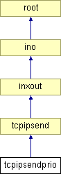

Main Page
Classes
Files
Class List
Class Index
Class Hierarchy
Class Members
tcpipsendprio Class Reference
#include <
tcpipsendprio.h
>
Inheritance diagram for tcpipsendprio:

List of all members.
Public Member Functions
void
queue_pkt
(int,
TCPsendMode
)
Member Function Documentation
void tcpipsendprio::queue_pkt
(
int
len
,
TCPsendMode
mode
)
Reimplemented from
tcpipsend
.
The documentation for this class was generated from the following files:
src/user/
tcpipsendprio.h
src/user/
tcpipsendprio.c
Generated on Sun Feb 14 12:32:28 2010 for Luayats by
1.6.1
 1.6.1
1.6.1